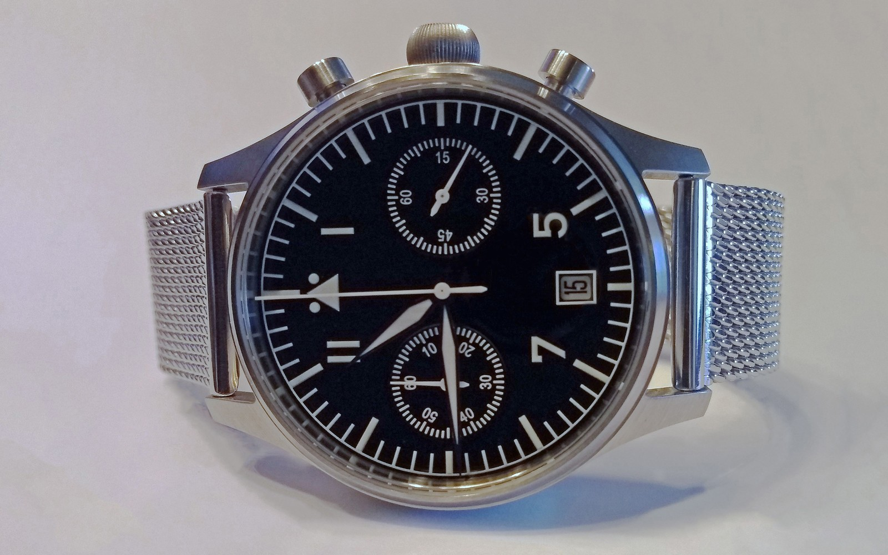
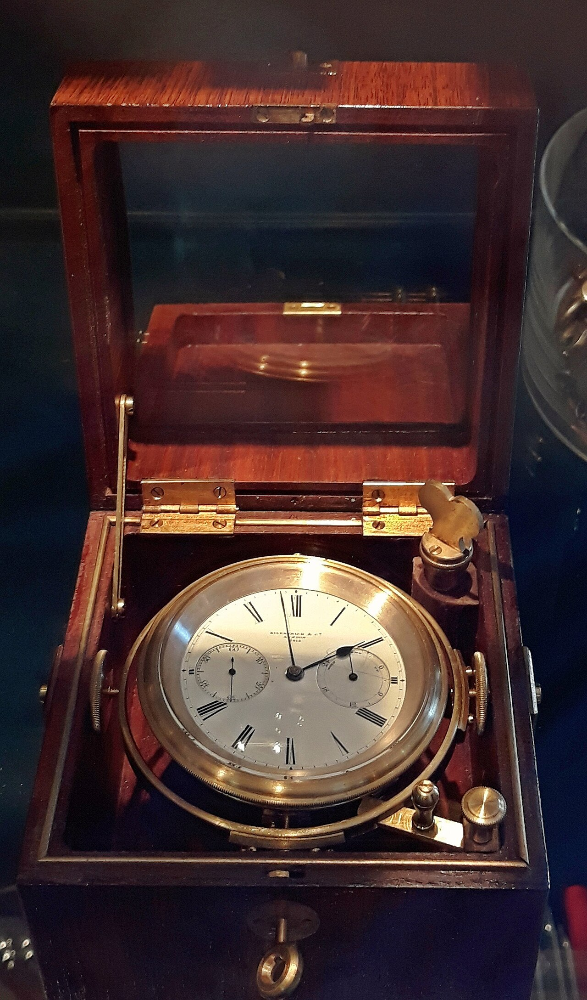
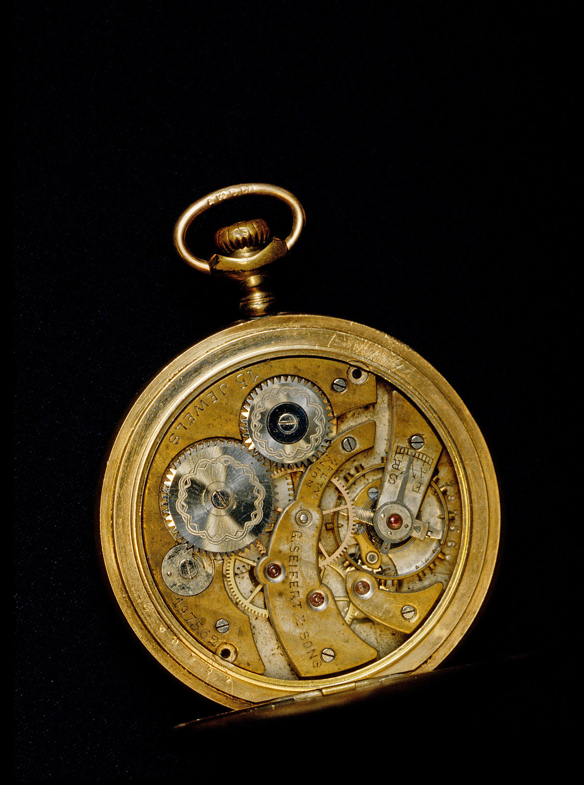
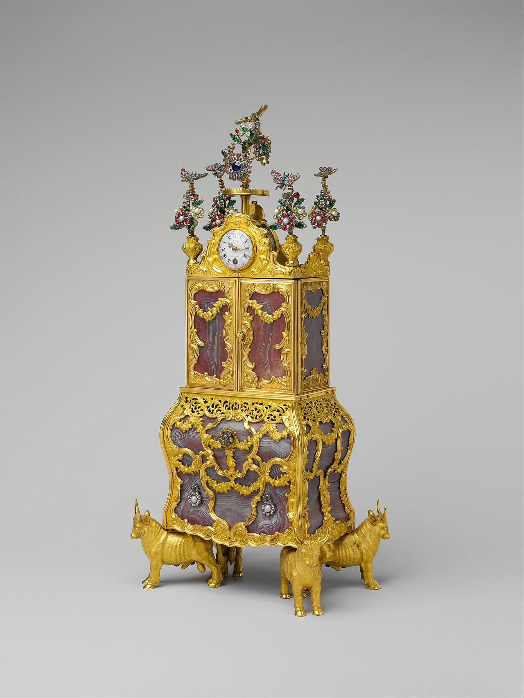

Chronometry Treatise • 15 Min Read
Solar Compass Bezel Navigation & Astrodynamics
Astrodynamics of Solar Compass Bezels & Azimuth Angle Calculations in Expedition Horology.
March 02, 2026
Read Monograph →

Chronometry Treatise • 14 Min Read
Glucydur Balance Wheels & Thermal Isochronism
Glucydur Balance Wheels, Invar Bimetallics & Thermal Isochronism in Field Chronometers.
March 04, 2026
Read Monograph →

Chronometry Treatise • 16 Min Read
Antimagnetic Hairsprings & 15,000 Gauss Shielding
Magnetic Flux Resistance: Nivachron, Silicon Spiromax & 15,000 Gauss Field Shielding.
March 06, 2026
Read Monograph →

Chronometry Treatise • 13 Min Read
Marine Chronometer Gimbals & Longitude Cartography
Gimbaled Marine Chronometers & John Harrison's Legacy in Marine Cartography.
March 08, 2026
Read Monograph →

Chronometry Treatise • 14 Min Read
Co-Axial Escapement Kinetic Tribology
Kinetic Tribology of Co-Axial Escapements vs Swiss Lever Radial Friction.
March 10, 2026
Read Monograph →

Chronometry Treatise • 15 Min Read
Super-LumiNova vs Tritium Photoluminescent Decay
Photoluminescent Radiometry: Super-LumiNova Grade X1 vs Tritium Gas Tubes in Nocturnal Navigation.
March 12, 2026
Read Monograph →